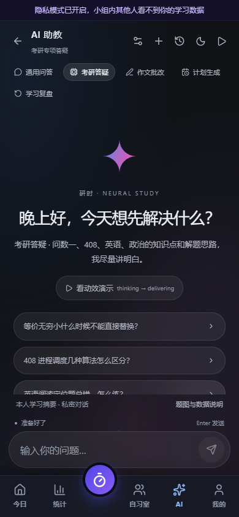
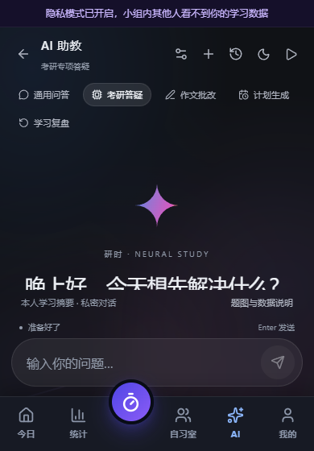
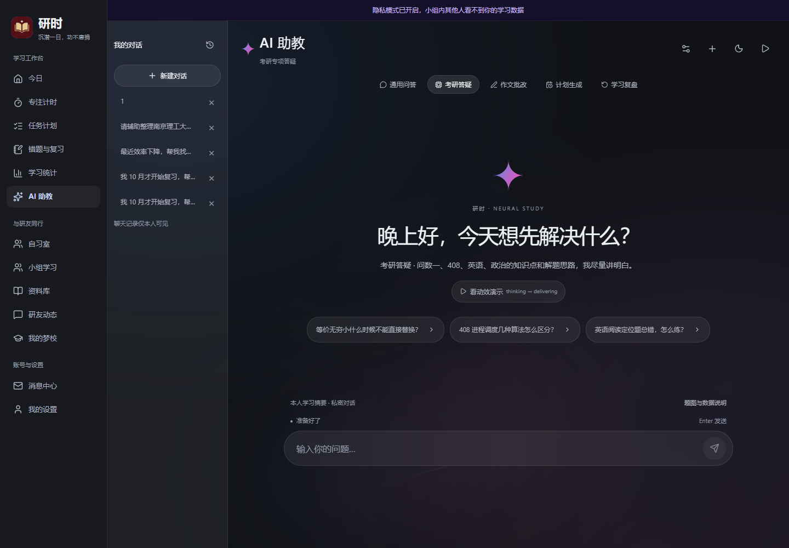
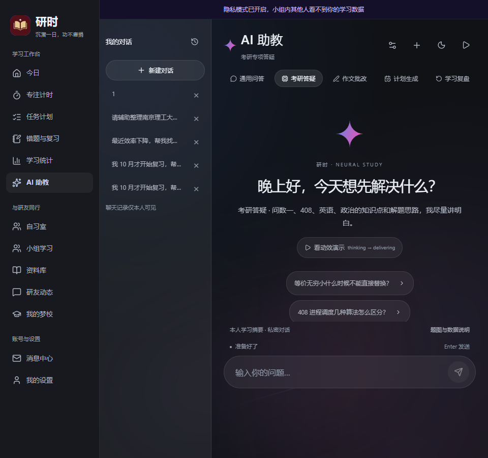

390 手机
五个场景标签全部可见，“学习复盘”换到第二行；空态显示“看动效演示”文字入口；输入框常驻底部。
五个场景标签全部可见，“学习复盘”换到第二行；空态显示“看动效演示”文字入口；输入框常驻底部。

390×560 矮屏
场景条仍完整换行，输入框和底部导航可达；内容在中间滚动区自然裁切。
场景条仍完整换行，输入框和底部导航可达；内容在中间滚动区自然裁切。

1440 桌面
左侧导航 + 我的对话侧栏 + 阅读区；顶部 Play 与空态“看动效演示”均指向独立单文件演示。
左侧导航 + 我的对话侧栏 + 阅读区；顶部 Play 与空态“看动效演示”均指向独立单文件演示。

960 临界宽度
侧栏和桌面导航启用，底部 TabBar 隐藏；五个场景标签仍在工作区内完整显示。
侧栏和桌面导航启用，底部 TabBar 隐藏；五个场景标签仍在工作区内完整显示。